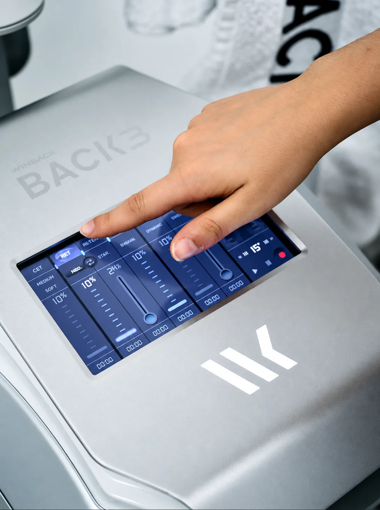
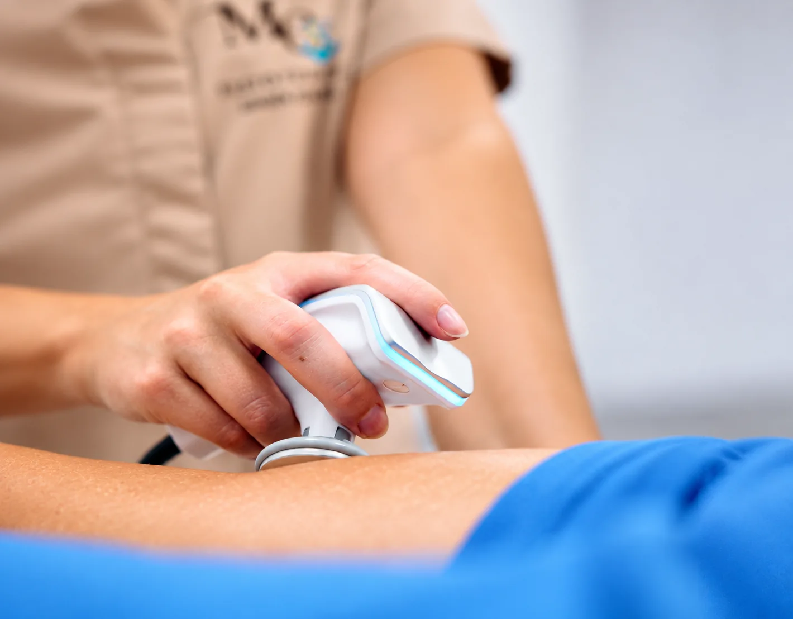
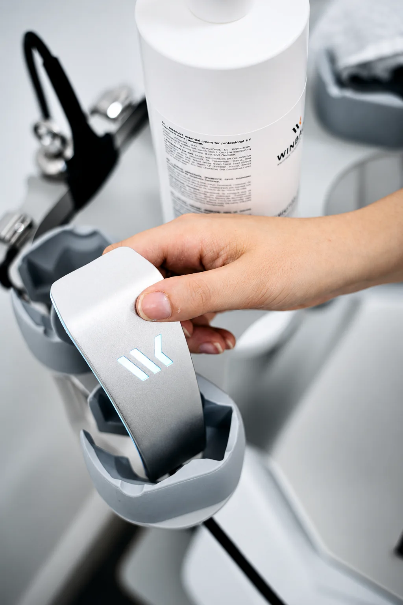

Tecarterapia y diatermia Winback, explicado con calma
La diatermia Winback es una tecnología de radiofrecuencia única que combina alta, media y baja frecuencia para actuar a distintos niveles del cuerpo: superficial, medio y profundo. Esto permite un tratamiento personalizado, potente y no invasivo.
Su energía trabaja desde el interior del tejido, favoreciendo la circulación, la regeneración y la reducción del dolor. Y es compatible con técnicas manuales y ejercicios activos, por lo que se integra perfectamente en tu sesión.
¿Qué puede aportarte?
Alivio del dolor
Desde las primeras sesiones.
Menos inflamación
Efecto antiinflamatorio y analgésico.
Recuperación más rápida
En lesiones musculares, tendinosas y articulares.
Mejor circulación
Sanguínea y linfática, y mejor movilidad.
Míralo en vídeo
Fisioterapia avanzada con tecnología de vanguardia
Winback y ecografía integradas en nuestros tratamientos ⚡️
antes de empezar
Puede ser para ti si…
- Lesiones musculares y tendinosas
- Dolor articular (rodilla, hombro, columna)
- Contracturas y sobrecargas
- Procesos postquirúrgicos, según indicación
- Recuperación deportiva
- Personas que buscan una opción no invasiva
La indicación concreta se determina siempre tras valorar tu caso.
Así es el proceso
Paso a paso, para que sepas en todo momento qué hacemos y por qué.
- 01
Valoración
Comprobamos si la diatermia está indicada.
- 02
Selección
Elegimos el nivel: superficial, medio o profundo.
- 03
Aplicación
Sola o combinada con técnicas manuales y movimiento.
- 04
Integración
Ejercicio activo para consolidar los resultados.
Qué traer o tener en cuenta
- Retira objetos metálicos de la zona
- Avísanos si llevas marcapasos o implantes
- Indícanos si estás embarazada
- Hidrátate bien antes y después
Así lo vivimos en la clínica


Tres frecuencias, tres profundidades
Pulsa cada nivel para ver en qué capa actúa y qué efecto tiene.
Estimula los tejidos profundos y favorece la regeneración celular.
Mejora la circulación y la oxigenación de la zona tratada.
Efecto analgésico y antiinflamatorio desde la propia sesión.
Tanto mi pareja como yo hemos sido tratados por María por diferentes lesiones con resultados muy satisfactorios. Es una gran profesional y además cuenta con tecnología avanzada que ayuda mucho al diagnóstico y tratamiento. Te explica todo con claridad y te ayuda en el proceso de recuperación. Muy satisfecha con su trato y resultados.
Preguntas frecuentes
Información útil antes de dar el primer paso.
¿No encuentras tu respuesta?
Pregúntanos01¿Qué siento durante la sesión?
Un calor agradable y profundo en la zona tratada. Es un tratamiento cómodo y no invasivo.
02¿Cómo actúa cada frecuencia?
La alta estimula tejidos profundos y la regeneración celular; la media mejora la circulación y oxigenación; la baja tiene efecto analgésico y antiinflamatorio inmediato.
03¿Se utiliza en todas las sesiones?
No. La elección de herramientas depende de la valoración y del plan individual.
04¿Sustituye al ejercicio?
No. Es compatible con técnicas manuales y ejercicios activos, y funciona mejor combinada.
05¿Hay contraindicaciones?
Sí: marcapasos, embarazo, algunos implantes o procesos oncológicos activos, entre otros. Por eso siempre valoramos antes.
06¿En cuántas sesiones se notan resultados?
Muchas personas notan alivio desde las primeras sesiones, aunque depende de cada caso.
Reserva: Tecarterapia y diatermia Winback
Responde tres preguntas y te preparamos el mensaje para enviarlo por WhatsApp. No guardamos ningún dato: tú decides si lo envías.
- Respuesta en horario de clínica
- Sin compromiso
- Te orientamos si no sabes qué servicio elegir